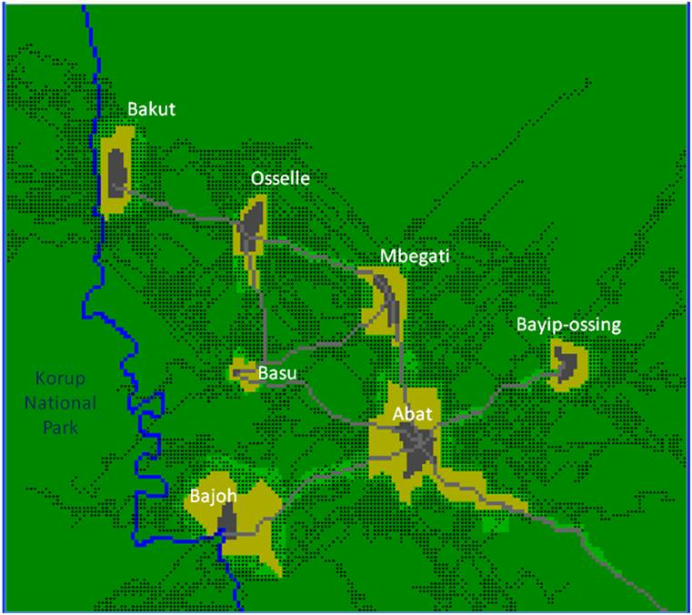

Abat: an
agent-based model on the hunting of blue duikers in
the Northern periphery of Korup National Park,
Cameroon
Background
 Since
June 2009, several studies have been carried out in the
Northern peripheral zone of Korup national park on the
livelihoods of local population and the status and use
of wildlife. The data collected have been introduced in
an agent-based model to integrate the existing knowledge
in a simulation tool aiming at promoting discussions
among local villagers and scientists to collectively
explore possible options to enhance a sustainable
wildlife management in the area. In July 2012, a set of
3 workshops has been organized by the University of
Dschang and the French research Institute CIRAD with the
participation of local villagers in order to share the
preliminary results of some studies conducted in the
area. The first version of the "Abat" agent-based model,
representing the hunting of blue duikers (Cephalophus
monticola) by using snare trap technique, has been used
to demonstrate and educate the population on the
importance of wildlife management in a bid to enhance
sustainability in the area. The blue duiker was chosen
as indicator since it is the most heavily hunted species
in the area.
Participatory simulation workshops
A 3-step exercise was carried out in order to
facilitate the comprehension of the computer model among
participants.
- The first step was meant to introduce the abstract
representation of a village in the forest and the blue
duiker individual-based population module. The
different types of land cover and the notion of cell
as a 1-ha portion of space were presented, as well as
the 7 colors used to represent the various stages of
individual blue duikers.
- In a second step, hunting with traps was introduced
in a wider portion of forest (two villages linked by a
road, a stylized map still without any realism).
- The last step was built on the elements previously
introduced but was based on an explicit representation
of the 7 villages and the Northern periphery of the
Korup National Park.
The spatial resolution of the model (the dimension of
the smallest observable detail) was the same in the 3
steps: a cell always represents 1 ha. The whole portion
of space represented in the model was gradually
expanded: 1.5 km * 1.5 km in the first step; 5 km * 5 km
in the second step; 16 km * 18 km in the last step. This
process of zooming out allowed starting focusing on the
biology and the behavior of the blue duiker. The
objective was to communicate and to discuss the related
parameters and the underlying assumptions for the
participants to not consider the model as a black box
and to become familiar with it. In the final step of the
workshops, the more realistic representation of the
region in the model allowed making the final discussions
more concrete.
For more information, please contact the author.
|
|